Flachdachabdichtung
Bitumen- und kunststoffbasierte Abdichtung für Flachdächer, fachgerecht verlegt und dauerhaft dicht.
Abdichtungstechnik · Heidelberg & Umgebung
Professionelle Abdichtung für Flachdächer, Balkone, Garagen und Terrassen — auf Bitumen oder Kunststoff, fachgerecht und dauerhaft dicht.
Leistungen
Jede Abdichtung wird auf den Untergrund und die Belastung vor Ort abgestimmt — keine Lösung von der Stange.
Bitumen- und kunststoffbasierte Abdichtung für Flachdächer, fachgerecht verlegt und dauerhaft dicht.
Zuverlässiger Schutz gegen eindringende Feuchtigkeit, abgestimmt auf Belag und Nutzung.
Dichte Flachdächer und Übergänge für Garagen — witterungsbeständig und langlebig.
Abdichtung unter Terrassenbelägen, damit Feuchtigkeit draußen bleibt statt ins Mauerwerk zu ziehen.
Schutz der Sockelbereiche vor Spritzwasser und aufsteigender Feuchtigkeit.
Undichte Stellen an bestehenden Flachdächern finden, reparieren und instand halten.
Abdichtung unter Fliesen- und Plattenbelägen in Nassräumen nach DIN 18534 — die Grundlage, bevor gefliest wird.
Komplettsanierung stark beanspruchter oder alter Flächen — neue Abdichtung samt Aufbau statt Einzelreparatur.
Ablauf
Formular oder Anruf — wir melden uns zeitnah zurück.
Begutachtung der Fläche, Einschätzung des Aufwands.
Klares, unverbindliches Angebot mit Material und Preis.
Fachgerechte Abdichtung, sauber und termingerecht.
Werkzeuge
Handwerk statt Blackbox: die Ausrüstung, mit der Bitumen- und Kunststoffbahnen fachgerecht verlegt und verschweißt werden. Mehr dazu, wie sich diese Technik über Jahrtausende entwickelt hat, in unserer Geschichte der Abdichtung.
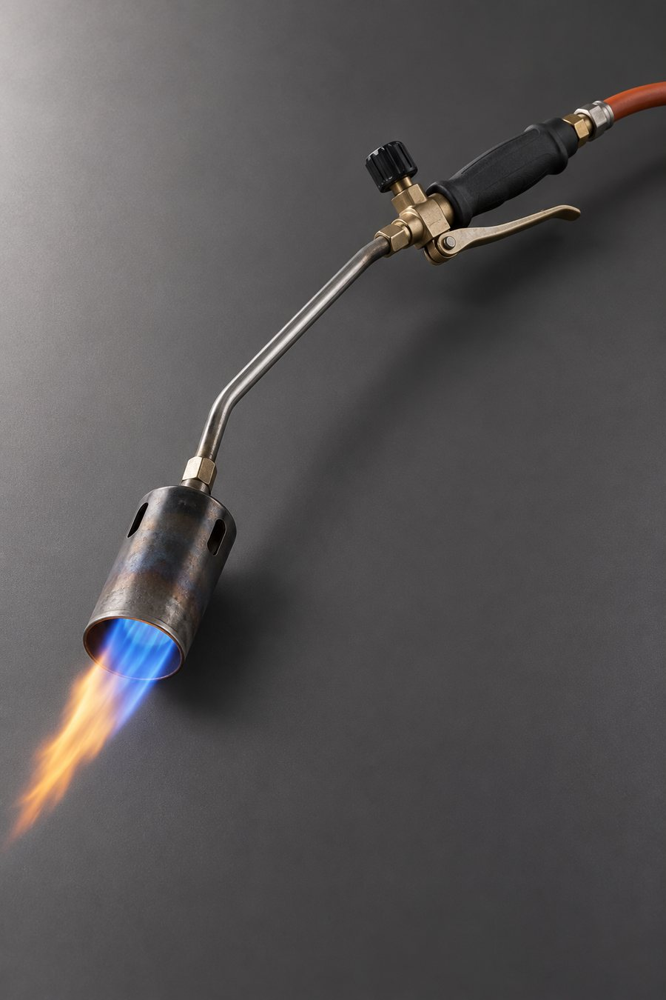
Für das Verschweißen von Bitumenbahnen — Nähte werden erhitzt und dauerhaft verbunden.
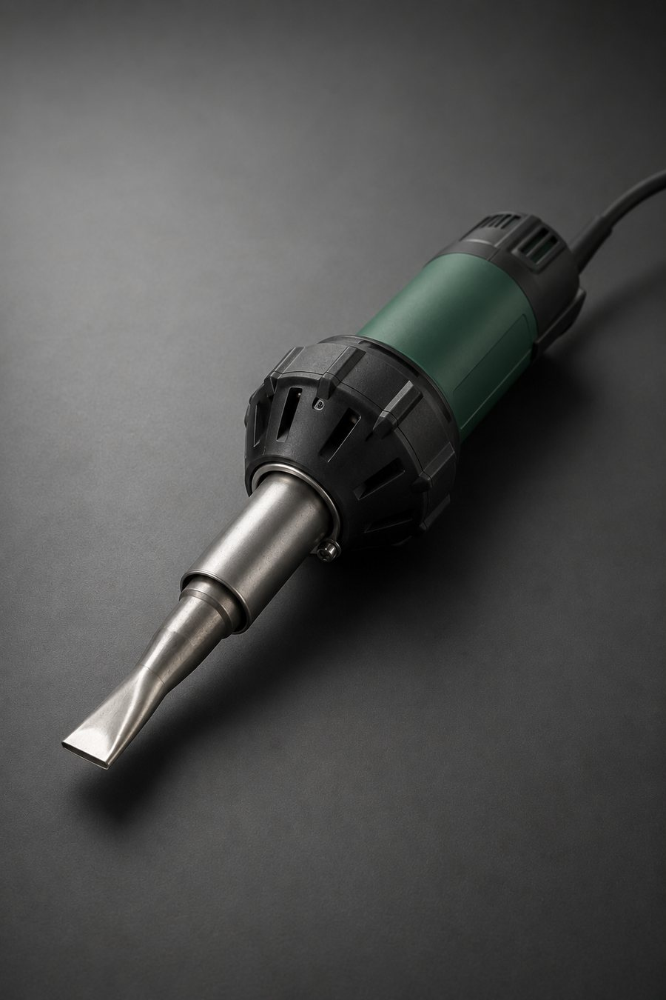
Für Kunststoffbahnen: Handgerät für Details und Anschlüsse, Automat für große Flächen.
Fügt die Nähte sauber zusammen — je nach Stelle mit weicher Gummi- oder harter Silikonrolle.
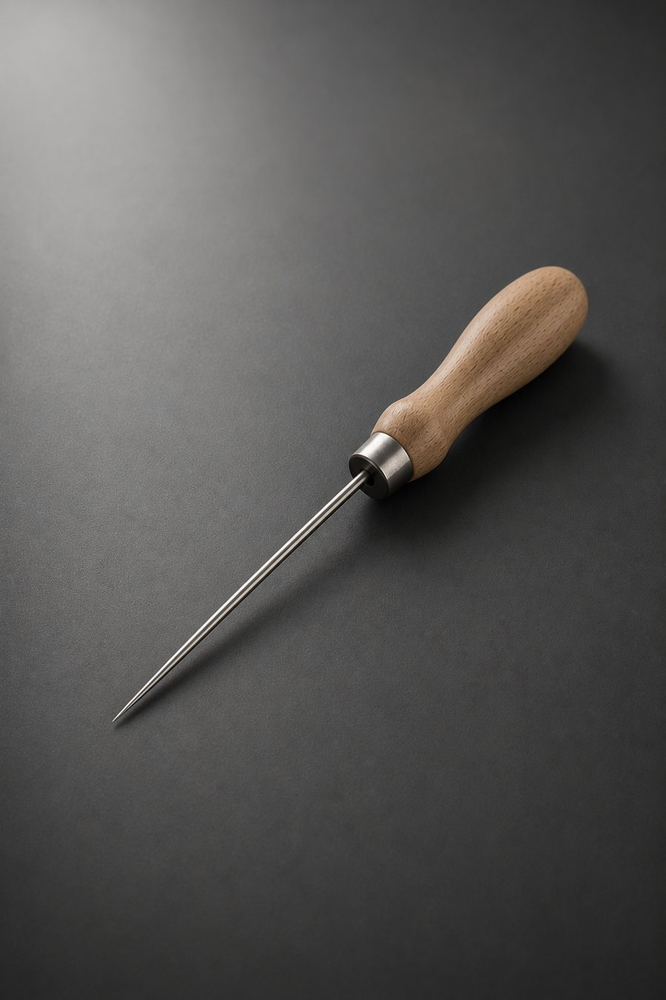
Zur abschließenden Kontrolle jeder Schweißnaht — nur geprüft ist wirklich dicht.
Für Voranstrich, Kleber und alle Übergänge, die von Hand sauber verstrichen werden müssen.
S3-Sicherheitsschuhe, Helm und Absturzsicherung — Standard bei jedem Einsatz auf dem Dach.
Materialien
Je nach Untergrund, Belastung und Budget kommt das passende Material zum Einsatz — nicht immer dasselbe, aber immer fachgerecht verarbeitet.
Bewährt für Flachdächer: mehrlagig verschweißt, robust gegen Witterung und mechanische Belastung.
EPDM-, PVC- und FPO-Bahnen: einlagig, heißluftverschweißt, leicht und flexibel bei Anschlussdetails.
Für die Verbundabdichtung unter Fliesen in Bad und Dusche sowie schwierige Ecken und Durchdringungen.
Verstärkung an Ecken, Anschlüssen und Abläufen — genau dort, wo eine Bahn allein nicht reicht.
Einblicke
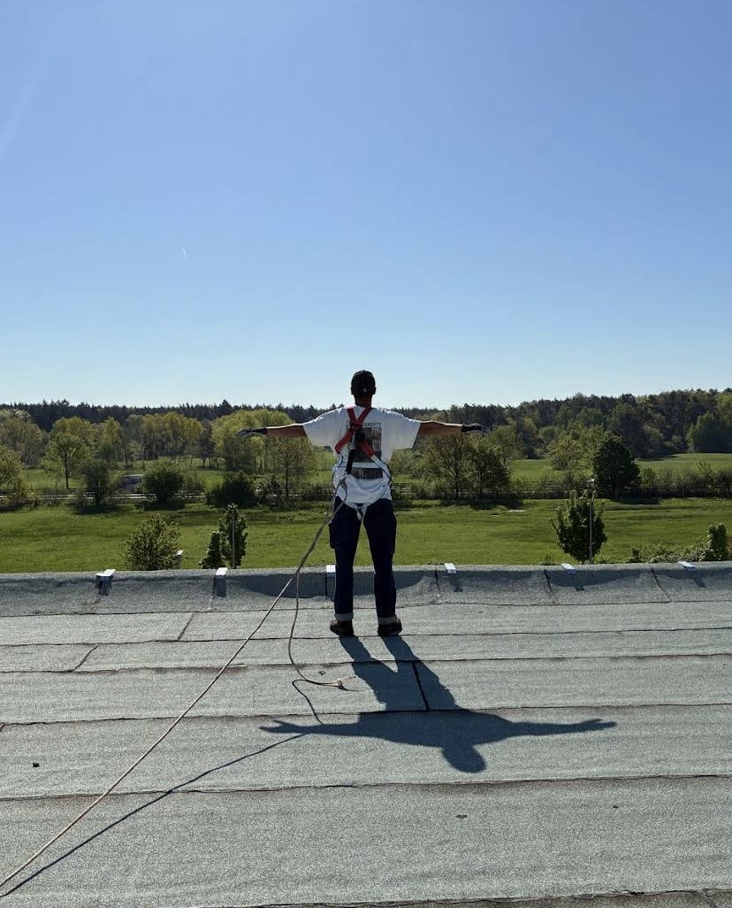
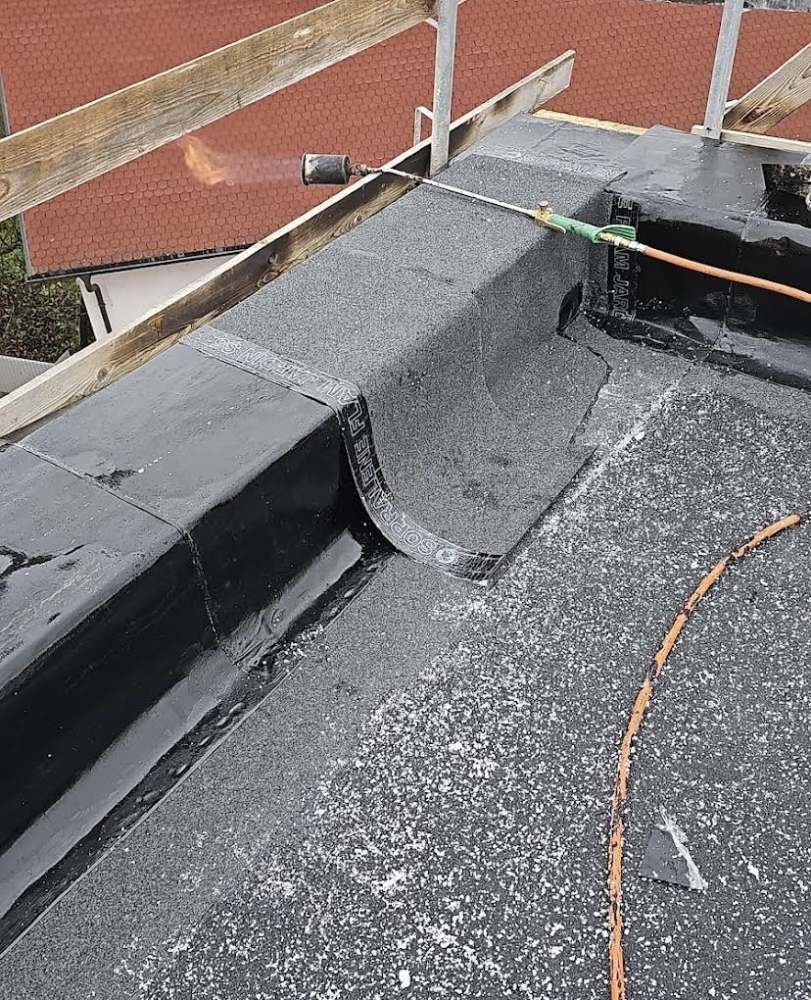
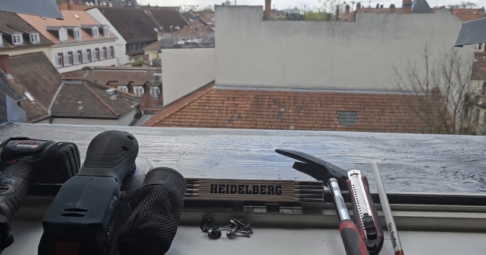
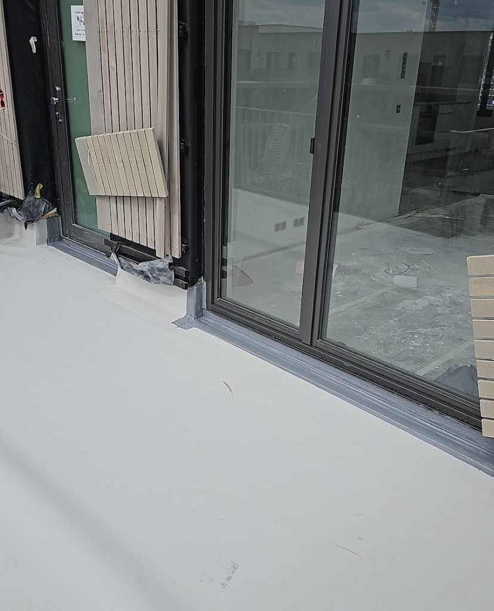
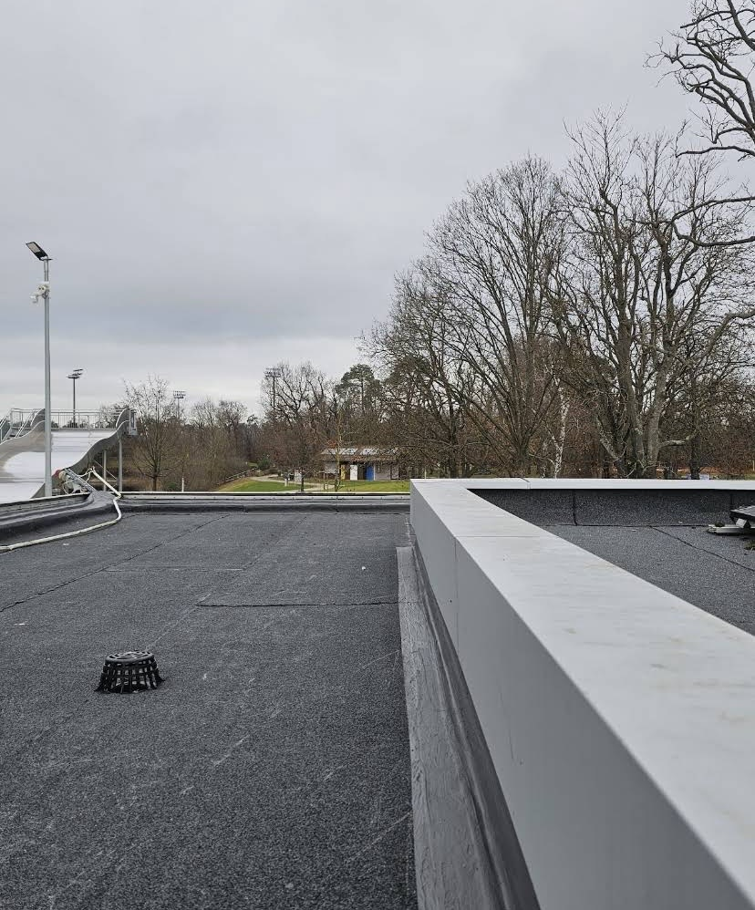
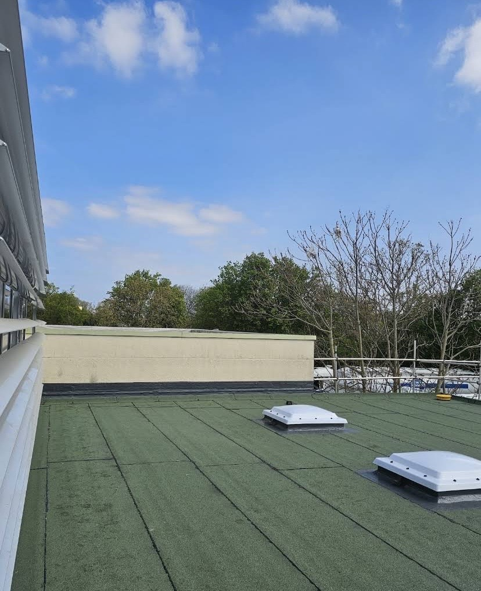
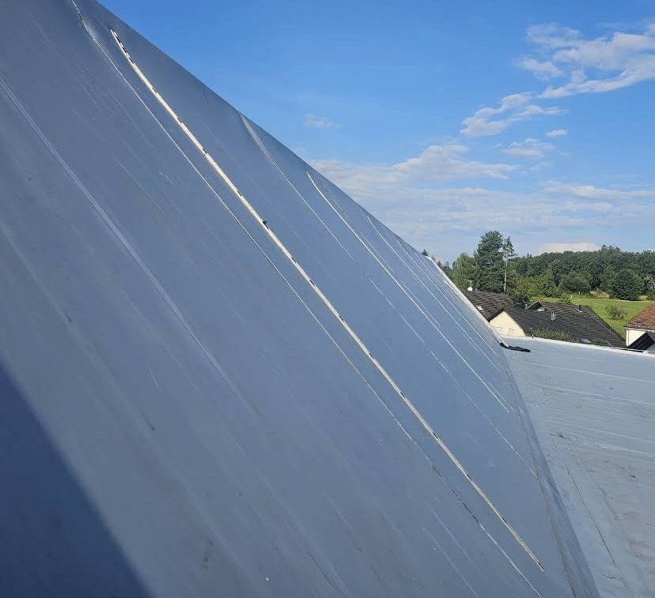
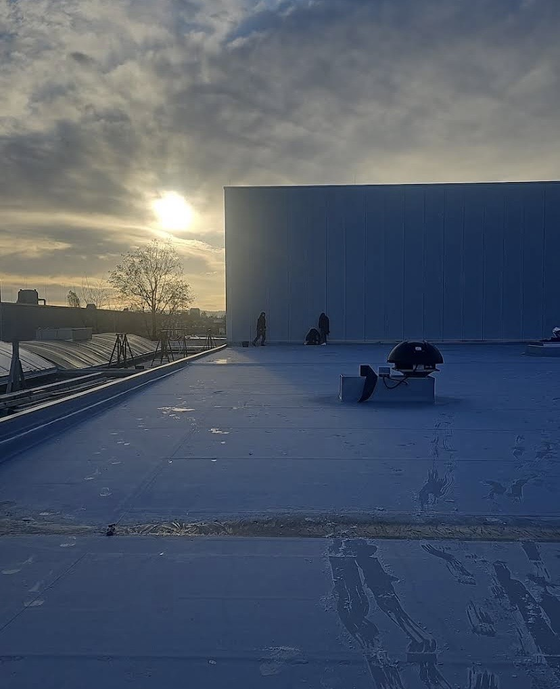
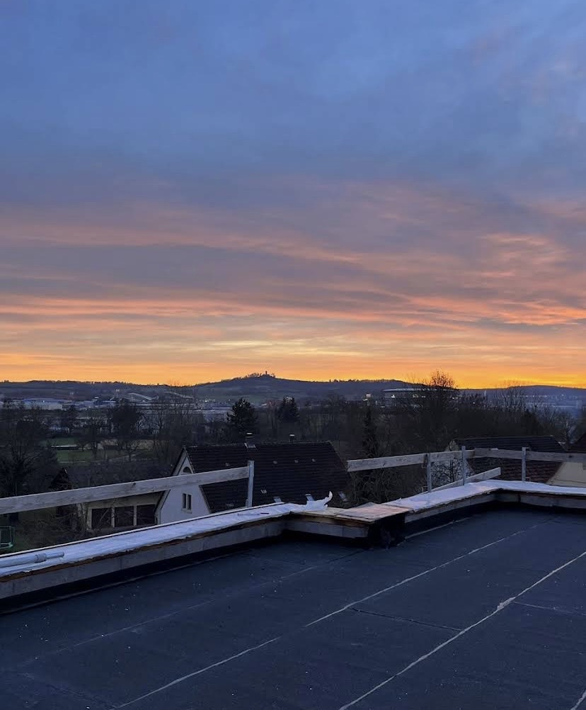
Bewertungen
Echte Google-Rezensionen — ungekürzt bis auf das Wesentliche, unbearbeitet im Wortlaut.
„Wir haben unseren Balkon (Haus meiner Großmutter) von HD Abdichtungstechnik sanieren lassen – inklusive Abriss, Abdichtung und Verlegung eines neuen Holzbodens – und sind rundum zufrieden!“
„Die Reparaturarbeiten am Kaminanbau auf meinem Flachdach wurden schnell und professionell erledigt. Ich fühlte mich gut beraten, und die Arbeiten wurden termingerecht abgeschlossen. Top Service!“
„Ich bin sehr zufrieden. Professionelle Abwicklung. Wir haben sehr schnell ein gutes Angebot für das Abdichten unseres Garagendaches bekommen. Der Preis war fair.“
„Die umkehrbare Abdichtung meiner Tiefgarage war eine kluge Entscheidung. Das Team hat die Arbeiten zügig und präzise erledigt, und ich bin mit der Qualität sehr zufrieden.“
„Ich kann die Firma HD Abdichtungstechnik mit ruhigem Gewissen empfehlen. Ich hatte an einem Freitag angerufen … war am Tag danach alles erledigt und ich konnte wieder ruhig schlafen – danke dafür.“
„Die Qualität der Abdichtungsarbeiten ist hervorragend und hat meine Erwartungen übertroffen. … Dennoch kann ich HD Abdichtungstechnik jedem empfehlen, der eine professionelle und zuverlässige Sanierung benötigt.“
„Wir haben unsere Rundumterrasse im Penthouse vollständig sanieren lassen und uns für HD Abdichtungstechnik entschieden. Vom ersten Gespräch bis zur finalen Abnahme war die Zusammenarbeit mit Herrn Yildiz und seinem Team absolut überzeugend.“
„Die Firma ist zu 100% empfehlenswert. Die Kommunikation im Vorfeld war einwandfrei und ein erster Besichtigungstermin war kurzfristig möglich. Die Arbeiten der Balkonsanierung wurden sehr sorgfältig ausgeführt und wir sind mit dem Ergebnis sehr zufrieden.“
Über uns
HD Abdichtungstechnik ist ein Einzelunternehmen mit Sitz in Heidelberg. Wir haben uns auf Abdichtungslösungen für Flachdächer, Balkone, Garagen und Terrassen spezialisiert — auf Bitumen- wie auf Kunststoffbasis.
Ob Neubau, Sanierung oder Reparatur einer undichten Stelle: Wir schauen uns die Situation vor Ort an und schlagen die Lösung vor, die zum Untergrund und zur Belastung passt — nicht die, die am einfachsten für uns ist.
Standort
HD Abdichtungstechnik hat seinen Sitz in Heidelberg und ist in der gesamten Rhein-Neckar-Region unterwegs — direkt vor Ort auf Ihrem Dach, Balkon oder in der Garage.
In Google Maps öffnenFAQ
Schwerpunkt ist Heidelberg und die Rhein-Neckar-Region. Bei Bedarf sprechen wir auch Projekte im weiteren Umkreis ab.
Kommt auf Untergrund, Belastung und Budget an. Wir schauen uns die Fläche vor Ort an und empfehlen, was für Ihren Fall passt.
In der Regel innerhalb weniger Tage nach Anfrage — bei akuten Undichtigkeiten schneller.
Ja. Auch einzelne undichte Stellen oder Anschlüsse reparieren wir, ohne dass gleich die ganze Fläche neu gemacht werden muss.
Nein — wir übernehmen die Verbundabdichtung darunter (nach DIN 18534), also die Feuchtigkeitssperre, auf der später gefliest wird. Die Fliesenverlegung selbst ist Sache des Fliesenlegers; auf Wunsch stimmen wir uns direkt mit Ihrem Fliesenleger ab.
Kontakt
Formular ausfüllen oder direkt anrufen — wir melden uns zeitnah zurück.